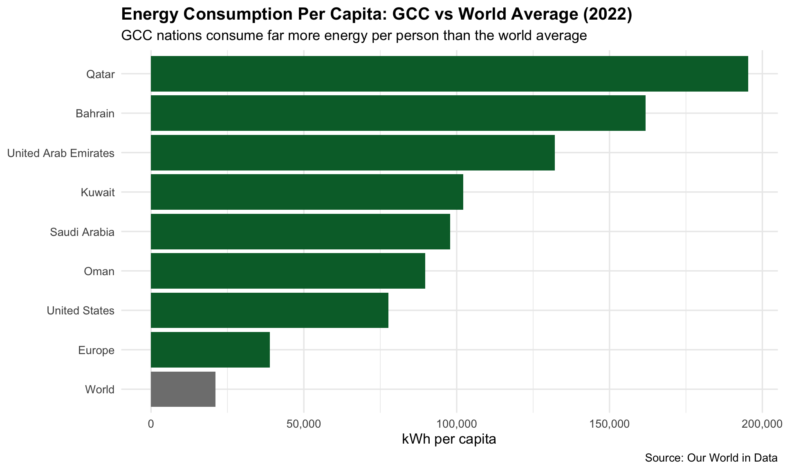
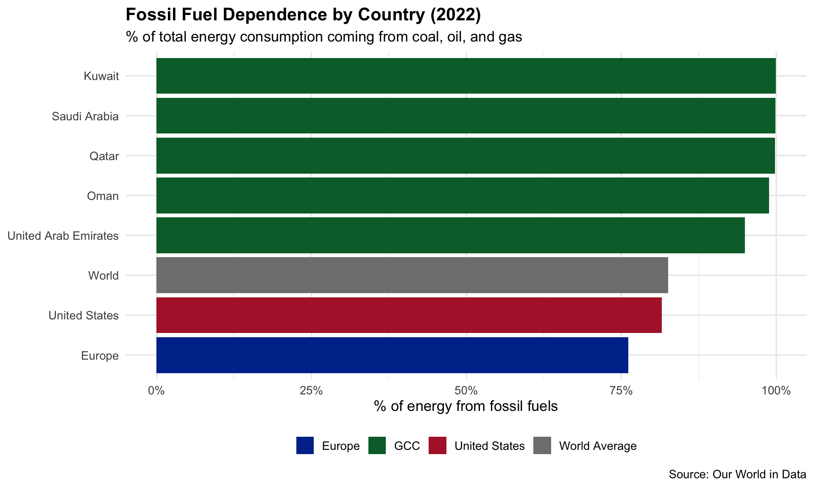
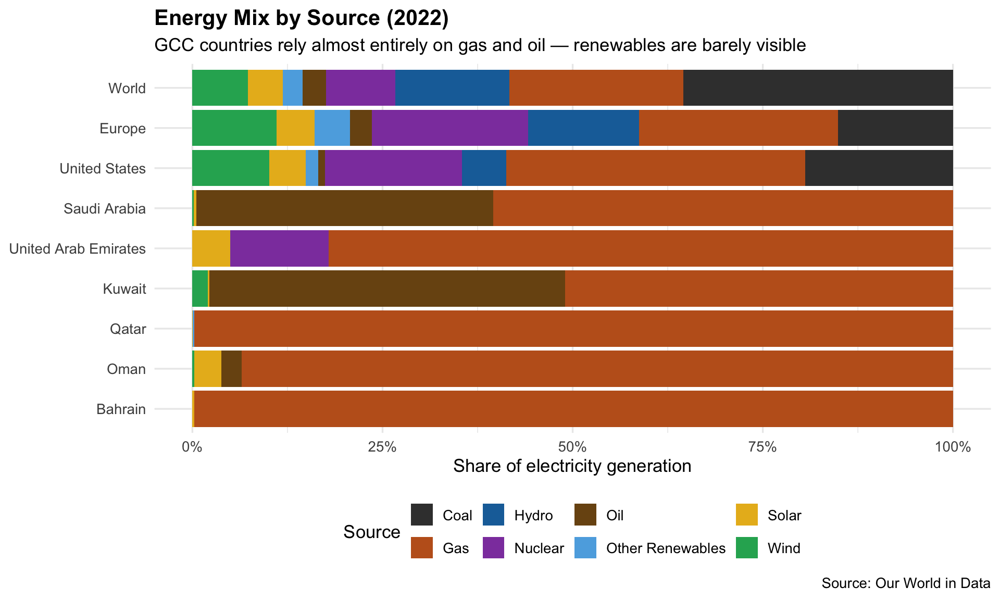
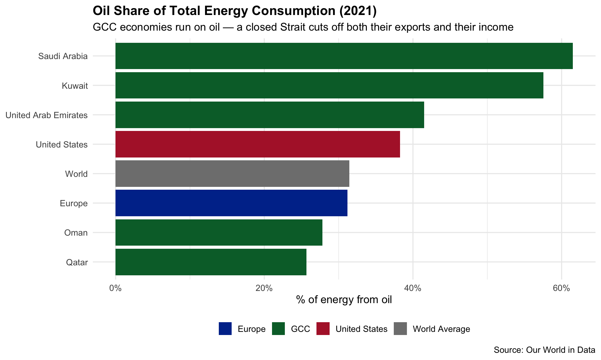
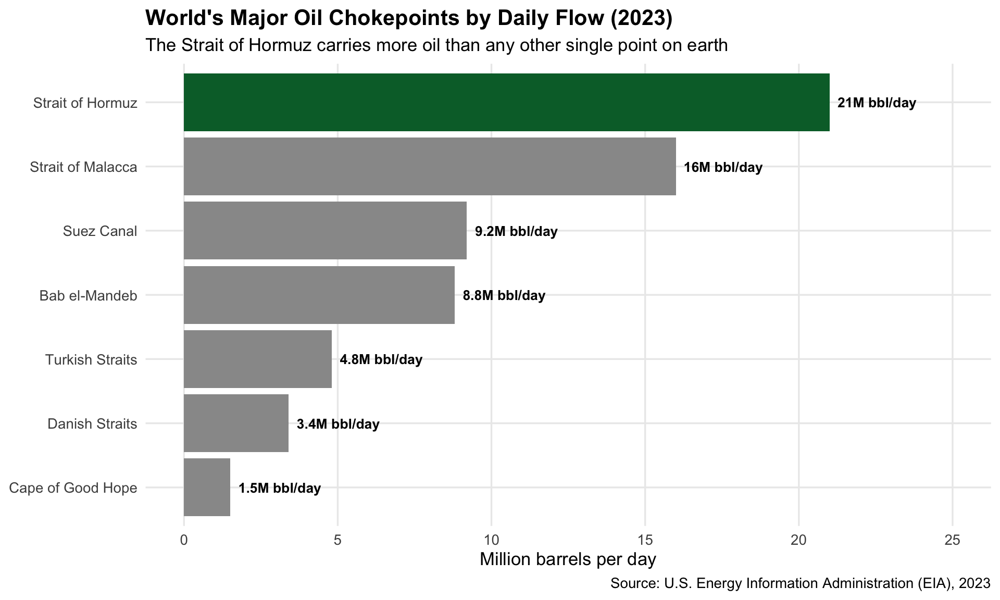
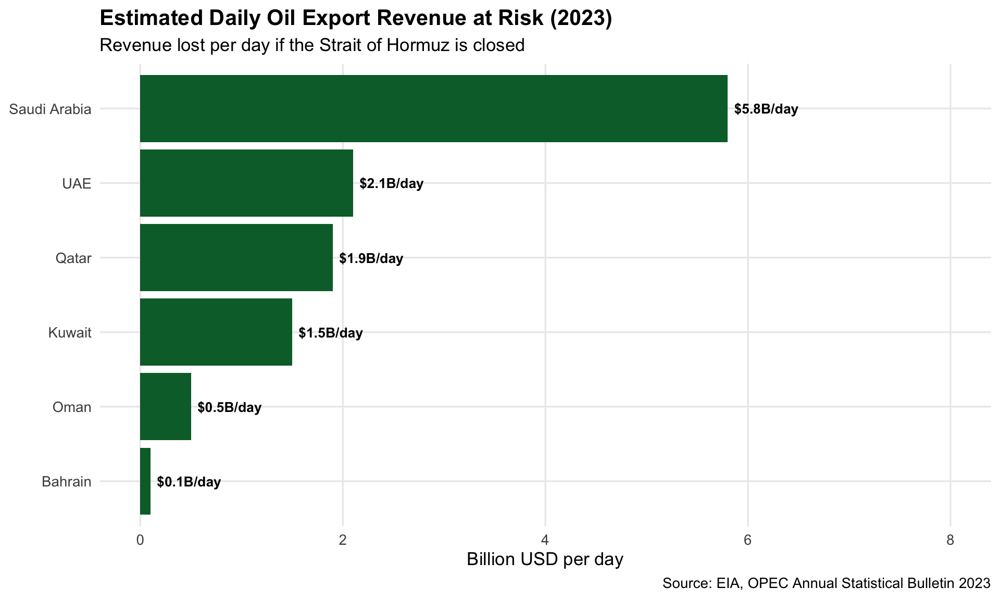
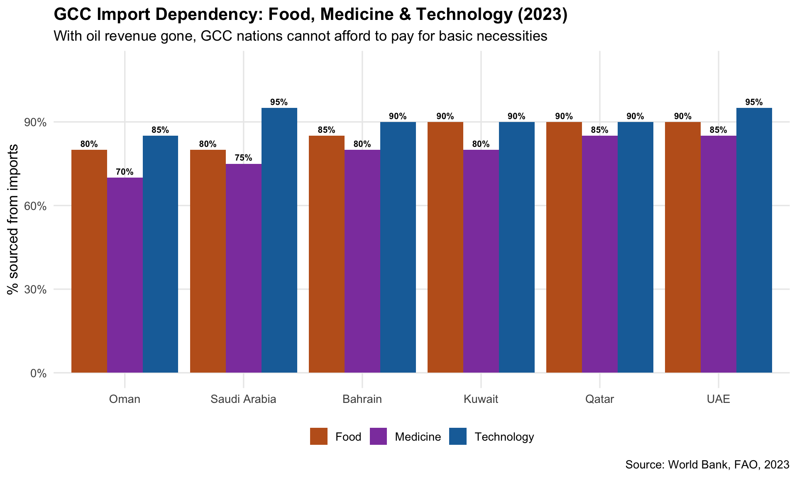

Code
library(tidyverse)
library(scales)Source: Our World in Data
library(tidyverse)
library(scales)url <- "https://raw.githubusercontent.com/owid/energy-data/master/owid-energy-data.csv"
energy_raw <- read_csv(url)
glimpse(energy_raw)Rows: 23,232
Columns: 130
$ country <chr> "ASEAN (Ember)", "ASEAN (…
$ year <dbl> 2000, 2001, 2002, 2003, 2…
$ iso_code <chr> NA, NA, NA, NA, NA, NA, N…
$ population <dbl> NA, NA, NA, NA, NA, NA, N…
$ gdp <dbl> NA, NA, NA, NA, NA, NA, N…
$ biofuel_cons_change_pct <dbl> NA, NA, NA, NA, NA, NA, N…
$ biofuel_cons_change_twh <dbl> NA, NA, NA, NA, NA, NA, N…
$ biofuel_cons_per_capita <dbl> NA, NA, NA, NA, NA, NA, N…
$ biofuel_consumption <dbl> NA, NA, NA, NA, NA, NA, N…
$ biofuel_elec_per_capita <dbl> NA, NA, NA, NA, NA, NA, N…
$ biofuel_electricity <dbl> 5.87, 6.46, 6.62, 7.45, 8…
$ biofuel_share_elec <dbl> 1.550, 1.596, 1.528, 1.62…
$ biofuel_share_energy <dbl> NA, NA, NA, NA, NA, NA, N…
$ carbon_intensity_elec <dbl> 572.52, 570.24, 572.68, 5…
$ coal_cons_change_pct <dbl> NA, NA, NA, NA, NA, NA, N…
$ coal_cons_change_twh <dbl> NA, NA, NA, NA, NA, NA, N…
$ coal_cons_per_capita <dbl> NA, NA, NA, NA, NA, NA, N…
$ coal_consumption <dbl> NA, NA, NA, NA, NA, NA, N…
$ coal_elec_per_capita <dbl> NA, NA, NA, NA, NA, NA, N…
$ coal_electricity <dbl> 76.03, 86.26, 93.43, 102.…
$ coal_prod_change_pct <dbl> NA, NA, NA, NA, NA, NA, N…
$ coal_prod_change_twh <dbl> NA, NA, NA, NA, NA, NA, N…
$ coal_prod_per_capita <dbl> NA, NA, NA, NA, NA, NA, N…
$ coal_production <dbl> NA, NA, NA, NA, NA, NA, N…
$ coal_share_elec <dbl> 20.081, 21.307, 21.568, 2…
$ coal_share_energy <dbl> NA, NA, NA, NA, NA, NA, N…
$ electricity_demand <dbl> 378.61, 404.85, 433.19, 4…
$ electricity_demand_per_capita <dbl> NA, NA, NA, NA, NA, NA, N…
$ electricity_generation <dbl> 378.61, 404.85, 433.19, 4…
$ electricity_share_energy <dbl> NA, NA, NA, NA, NA, NA, N…
$ energy_cons_change_pct <dbl> NA, NA, NA, NA, NA, NA, N…
$ energy_cons_change_twh <dbl> NA, NA, NA, NA, NA, NA, N…
$ energy_per_capita <dbl> NA, NA, NA, NA, NA, NA, N…
$ energy_per_gdp <dbl> NA, NA, NA, NA, NA, NA, N…
$ fossil_cons_change_pct <dbl> NA, NA, NA, NA, NA, NA, N…
$ fossil_cons_change_twh <dbl> NA, NA, NA, NA, NA, NA, N…
$ fossil_elec_per_capita <dbl> NA, NA, NA, NA, NA, NA, N…
$ fossil_electricity <dbl> 305.36, 327.66, 356.67, 3…
$ fossil_energy_per_capita <dbl> NA, NA, NA, NA, NA, NA, N…
$ fossil_fuel_consumption <dbl> NA, NA, NA, NA, NA, NA, N…
$ fossil_share_elec <dbl> 80.653, 80.934, 82.336, 8…
$ fossil_share_energy <dbl> NA, NA, NA, NA, NA, NA, N…
$ gas_cons_change_pct <dbl> NA, NA, NA, NA, NA, NA, N…
$ gas_cons_change_twh <dbl> NA, NA, NA, NA, NA, NA, N…
$ gas_consumption <dbl> NA, NA, NA, NA, NA, NA, N…
$ gas_elec_per_capita <dbl> NA, NA, NA, NA, NA, NA, N…
$ gas_electricity <dbl> 164.26, 190.41, 208.92, 2…
$ gas_energy_per_capita <dbl> NA, NA, NA, NA, NA, NA, N…
$ gas_prod_change_pct <dbl> NA, NA, NA, NA, NA, NA, N…
$ gas_prod_change_twh <dbl> NA, NA, NA, NA, NA, NA, N…
$ gas_prod_per_capita <dbl> NA, NA, NA, NA, NA, NA, N…
$ gas_production <dbl> NA, NA, NA, NA, NA, NA, N…
$ gas_share_elec <dbl> 43.385, 47.032, 48.228, 4…
$ gas_share_energy <dbl> NA, NA, NA, NA, NA, NA, N…
$ greenhouse_gas_emissions <dbl> 216.76, 230.86, 248.08, 2…
$ hydro_cons_change_pct <dbl> NA, NA, NA, NA, NA, NA, N…
$ hydro_cons_change_twh <dbl> NA, NA, NA, NA, NA, NA, N…
$ hydro_consumption <dbl> NA, NA, NA, NA, NA, NA, N…
$ hydro_elec_per_capita <dbl> NA, NA, NA, NA, NA, NA, N…
$ hydro_electricity <dbl> 50.45, 54.33, 53.29, 53.2…
$ hydro_energy_per_capita <dbl> NA, NA, NA, NA, NA, NA, N…
$ hydro_share_elec <dbl> 13.325, 13.420, 12.302, 1…
$ hydro_share_energy <dbl> NA, NA, NA, NA, NA, NA, N…
$ low_carbon_cons_change_pct <dbl> NA, NA, NA, NA, NA, NA, N…
$ low_carbon_cons_change_twh <dbl> NA, NA, NA, NA, NA, NA, N…
$ low_carbon_consumption <dbl> NA, NA, NA, NA, NA, NA, N…
$ low_carbon_elec_per_capita <dbl> NA, NA, NA, NA, NA, NA, N…
$ low_carbon_electricity <dbl> 73.25, 77.19, 76.52, 76.4…
$ low_carbon_energy_per_capita <dbl> NA, NA, NA, NA, NA, NA, N…
$ low_carbon_share_elec <dbl> 19.347, 19.066, 17.664, 1…
$ low_carbon_share_energy <dbl> NA, NA, NA, NA, NA, NA, N…
$ net_elec_imports <dbl> NA, NA, NA, NA, NA, NA, N…
$ net_elec_imports_share_demand <dbl> NA, NA, NA, NA, NA, NA, N…
$ nuclear_cons_change_pct <dbl> NA, NA, NA, NA, NA, NA, N…
$ nuclear_cons_change_twh <dbl> NA, NA, NA, NA, NA, NA, N…
$ nuclear_consumption <dbl> NA, NA, NA, NA, NA, NA, N…
$ nuclear_elec_per_capita <dbl> NA, NA, NA, NA, NA, NA, N…
$ nuclear_electricity <dbl> 0, 0, 0, 0, 0, 0, 0, 0, 0…
$ nuclear_energy_per_capita <dbl> NA, NA, NA, NA, NA, NA, N…
$ nuclear_share_elec <dbl> 0, 0, 0, 0, 0, 0, 0, 0, 0…
$ nuclear_share_energy <dbl> NA, NA, NA, NA, NA, NA, N…
$ oil_cons_change_pct <dbl> NA, NA, NA, NA, NA, NA, N…
$ oil_cons_change_twh <dbl> NA, NA, NA, NA, NA, NA, N…
$ oil_consumption <dbl> NA, NA, NA, NA, NA, NA, N…
$ oil_elec_per_capita <dbl> NA, NA, NA, NA, NA, NA, N…
$ oil_electricity <dbl> 65.07, 50.99, 54.32, 53.3…
$ oil_energy_per_capita <dbl> NA, NA, NA, NA, NA, NA, N…
$ oil_prod_change_pct <dbl> NA, NA, NA, NA, NA, NA, N…
$ oil_prod_change_twh <dbl> NA, NA, NA, NA, NA, NA, N…
$ oil_prod_per_capita <dbl> NA, NA, NA, NA, NA, NA, N…
$ oil_production <dbl> NA, NA, NA, NA, NA, NA, N…
$ oil_share_elec <dbl> 17.187, 12.595, 12.540, 1…
$ oil_share_energy <dbl> NA, NA, NA, NA, NA, NA, N…
$ other_renewable_consumption <dbl> NA, NA, NA, NA, NA, NA, N…
$ other_renewable_electricity <dbl> 22.80, 22.86, 23.23, 23.1…
$ other_renewable_exc_biofuel_electricity <dbl> 16.93, 16.40, 16.61, 15.7…
$ other_renewables_cons_change_pct <dbl> NA, NA, NA, NA, NA, NA, N…
$ other_renewables_cons_change_twh <dbl> NA, NA, NA, NA, NA, NA, N…
$ other_renewables_elec_per_capita <dbl> NA, NA, NA, NA, NA, NA, N…
$ other_renewables_elec_per_capita_exc_biofuel <dbl> NA, NA, NA, NA, NA, NA, N…
$ other_renewables_energy_per_capita <dbl> NA, NA, NA, NA, NA, NA, N…
$ other_renewables_share_elec <dbl> 6.022, 5.647, 5.363, 5.06…
$ other_renewables_share_elec_exc_biofuel <dbl> 4.472, 4.051, 3.834, 3.43…
$ other_renewables_share_energy <dbl> NA, NA, NA, NA, NA, NA, N…
$ per_capita_electricity <dbl> NA, NA, NA, NA, NA, NA, N…
$ primary_energy_consumption <dbl> NA, NA, NA, NA, NA, NA, N…
$ renewables_cons_change_pct <dbl> NA, NA, NA, NA, NA, NA, N…
$ renewables_cons_change_twh <dbl> NA, NA, NA, NA, NA, NA, N…
$ renewables_consumption <dbl> NA, NA, NA, NA, NA, NA, N…
$ renewables_elec_per_capita <dbl> NA, NA, NA, NA, NA, NA, N…
$ renewables_electricity <dbl> 73.25, 77.19, 76.52, 76.4…
$ renewables_energy_per_capita <dbl> NA, NA, NA, NA, NA, NA, N…
$ renewables_share_elec <dbl> 19.347, 19.066, 17.664, 1…
$ renewables_share_energy <dbl> NA, NA, NA, NA, NA, NA, N…
$ solar_cons_change_pct <dbl> NA, NA, NA, NA, NA, NA, N…
$ solar_cons_change_twh <dbl> NA, NA, NA, NA, NA, NA, N…
$ solar_consumption <dbl> NA, NA, NA, NA, NA, NA, N…
$ solar_elec_per_capita <dbl> NA, NA, NA, NA, NA, NA, N…
$ solar_electricity <dbl> 0.00, 0.00, 0.00, 0.00, 0…
$ solar_energy_per_capita <dbl> NA, NA, NA, NA, NA, NA, N…
$ solar_share_elec <dbl> 0.000, 0.000, 0.000, 0.00…
$ solar_share_energy <dbl> NA, NA, NA, NA, NA, NA, N…
$ wind_cons_change_pct <dbl> NA, NA, NA, NA, NA, NA, N…
$ wind_cons_change_twh <dbl> NA, NA, NA, NA, NA, NA, N…
$ wind_consumption <dbl> NA, NA, NA, NA, NA, NA, N…
$ wind_elec_per_capita <dbl> NA, NA, NA, NA, NA, NA, N…
$ wind_electricity <dbl> 0.00, 0.00, 0.00, 0.00, 0…
$ wind_energy_per_capita <dbl> NA, NA, NA, NA, NA, NA, N…
$ wind_share_elec <dbl> 0.000, 0.000, 0.000, 0.00…
$ wind_share_energy <dbl> NA, NA, NA, NA, NA, NA, N…# How many rows and columns?
cat("Rows:", nrow(energy_raw), "\n")Rows: 23232 cat("Columns:", ncol(energy_raw), "\n")Columns: 130 # Column names
names(energy_raw) [1] "country"
[2] "year"
[3] "iso_code"
[4] "population"
[5] "gdp"
[6] "biofuel_cons_change_pct"
[7] "biofuel_cons_change_twh"
[8] "biofuel_cons_per_capita"
[9] "biofuel_consumption"
[10] "biofuel_elec_per_capita"
[11] "biofuel_electricity"
[12] "biofuel_share_elec"
[13] "biofuel_share_energy"
[14] "carbon_intensity_elec"
[15] "coal_cons_change_pct"
[16] "coal_cons_change_twh"
[17] "coal_cons_per_capita"
[18] "coal_consumption"
[19] "coal_elec_per_capita"
[20] "coal_electricity"
[21] "coal_prod_change_pct"
[22] "coal_prod_change_twh"
[23] "coal_prod_per_capita"
[24] "coal_production"
[25] "coal_share_elec"
[26] "coal_share_energy"
[27] "electricity_demand"
[28] "electricity_demand_per_capita"
[29] "electricity_generation"
[30] "electricity_share_energy"
[31] "energy_cons_change_pct"
[32] "energy_cons_change_twh"
[33] "energy_per_capita"
[34] "energy_per_gdp"
[35] "fossil_cons_change_pct"
[36] "fossil_cons_change_twh"
[37] "fossil_elec_per_capita"
[38] "fossil_electricity"
[39] "fossil_energy_per_capita"
[40] "fossil_fuel_consumption"
[41] "fossil_share_elec"
[42] "fossil_share_energy"
[43] "gas_cons_change_pct"
[44] "gas_cons_change_twh"
[45] "gas_consumption"
[46] "gas_elec_per_capita"
[47] "gas_electricity"
[48] "gas_energy_per_capita"
[49] "gas_prod_change_pct"
[50] "gas_prod_change_twh"
[51] "gas_prod_per_capita"
[52] "gas_production"
[53] "gas_share_elec"
[54] "gas_share_energy"
[55] "greenhouse_gas_emissions"
[56] "hydro_cons_change_pct"
[57] "hydro_cons_change_twh"
[58] "hydro_consumption"
[59] "hydro_elec_per_capita"
[60] "hydro_electricity"
[61] "hydro_energy_per_capita"
[62] "hydro_share_elec"
[63] "hydro_share_energy"
[64] "low_carbon_cons_change_pct"
[65] "low_carbon_cons_change_twh"
[66] "low_carbon_consumption"
[67] "low_carbon_elec_per_capita"
[68] "low_carbon_electricity"
[69] "low_carbon_energy_per_capita"
[70] "low_carbon_share_elec"
[71] "low_carbon_share_energy"
[72] "net_elec_imports"
[73] "net_elec_imports_share_demand"
[74] "nuclear_cons_change_pct"
[75] "nuclear_cons_change_twh"
[76] "nuclear_consumption"
[77] "nuclear_elec_per_capita"
[78] "nuclear_electricity"
[79] "nuclear_energy_per_capita"
[80] "nuclear_share_elec"
[81] "nuclear_share_energy"
[82] "oil_cons_change_pct"
[83] "oil_cons_change_twh"
[84] "oil_consumption"
[85] "oil_elec_per_capita"
[86] "oil_electricity"
[87] "oil_energy_per_capita"
[88] "oil_prod_change_pct"
[89] "oil_prod_change_twh"
[90] "oil_prod_per_capita"
[91] "oil_production"
[92] "oil_share_elec"
[93] "oil_share_energy"
[94] "other_renewable_consumption"
[95] "other_renewable_electricity"
[96] "other_renewable_exc_biofuel_electricity"
[97] "other_renewables_cons_change_pct"
[98] "other_renewables_cons_change_twh"
[99] "other_renewables_elec_per_capita"
[100] "other_renewables_elec_per_capita_exc_biofuel"
[101] "other_renewables_energy_per_capita"
[102] "other_renewables_share_elec"
[103] "other_renewables_share_elec_exc_biofuel"
[104] "other_renewables_share_energy"
[105] "per_capita_electricity"
[106] "primary_energy_consumption"
[107] "renewables_cons_change_pct"
[108] "renewables_cons_change_twh"
[109] "renewables_consumption"
[110] "renewables_elec_per_capita"
[111] "renewables_electricity"
[112] "renewables_energy_per_capita"
[113] "renewables_share_elec"
[114] "renewables_share_energy"
[115] "solar_cons_change_pct"
[116] "solar_cons_change_twh"
[117] "solar_consumption"
[118] "solar_elec_per_capita"
[119] "solar_electricity"
[120] "solar_energy_per_capita"
[121] "solar_share_elec"
[122] "solar_share_energy"
[123] "wind_cons_change_pct"
[124] "wind_cons_change_twh"
[125] "wind_consumption"
[126] "wind_elec_per_capita"
[127] "wind_electricity"
[128] "wind_energy_per_capita"
[129] "wind_share_elec"
[130] "wind_share_energy" # Representative sample of raw wide structure
energy_raw |>
filter(country %in% c("World", "Saudi Arabia")) |>
filter(year == 2022) |>
select(country, year, oil_electricity, gas_electricity,
solar_electricity, wind_electricity) |>
knitr::kable(caption = "Sample of raw wide-format data before tidying")| country | year | oil_electricity | gas_electricity | solar_electricity | wind_electricity |
|---|---|---|---|---|---|
| Saudi Arabia | 2022 | 159.99 | 247.84 | 1.22 | 0.79 |
| World | 2022 | 888.28 | 6629.74 | 1330.01 | 2107.18 |
Global energy demand is rising — driven by population growth, industrialization, and the rapid expansion of AI data centers. At the center of this story sits the Gulf Cooperation Council (GCC): Saudi Arabia, the UAE, Qatar, Kuwait, Bahrain, and Oman.
These nations face a unique paradox. They occupy one of the hottest regions on earth, creating enormous domestic energy demand for cooling and desalination — yet they also sit atop the world’s largest fossil fuel reserves, making their economies almost entirely dependent on energy exports.
That dependence makes regional stability an existential economic priority. The Strait of Hormuz — controlled along its northern shore by Iran — is the world’s most critical energy chokepoint. Roughly 20% of global oil supply passes through it daily. Any military escalation between Iran and GCC states risks blockading that strait, triggering a global energy supply shock that would spike oil prices, destabilize economies worldwide, and set back the renewable energy transition for years.
This analysis explores GCC energy consumption patterns, fossil fuel dependence, and what the data tells us about why these nations have every incentive to see the Iran conflict resolved quickly.
countries <- c("World", "United States", "Europe",
"Saudi Arabia", "United Arab Emirates",
"Qatar", "Kuwait", "Bahrain", "Oman")
gcc <- energy_raw |>
filter(country %in% countries) |>
select(
country, year,
energy_per_capita,
fossil_share_energy,
coal_electricity,
gas_electricity,
oil_electricity,
nuclear_electricity,
hydro_electricity,
solar_electricity,
wind_electricity,
other_renewable_electricity
) |>
filter(year >= 2000) |>
mutate(
region = case_when(
country %in% c("Saudi Arabia", "United Arab Emirates",
"Qatar", "Kuwait", "Bahrain", "Oman") ~ "GCC",
country == "United States" ~ "United States",
country == "Europe" ~ "Europe",
country == "World" ~ "World Average"
)
)The first chart makes the gap impossible to ignore. Qatar consumes nearly 200,000 kWh per person per year — roughly 8 times the world average and almost 3 times the United States. Every GCC country sits well above both the US and Europe.
This is not by accident. GCC nations face some of the harshest climate conditions on earth, with summer temperatures regularly exceeding 45°C (113°F). Air conditioning is not optional — it runs constantly, in homes, offices, shopping malls, and even outdoor spaces. On top of that, energy prices in most GCC countries are heavily government-subsidized, meaning there is little financial pressure on consumers or industries to use less.
The result is a region that is extraordinarily dependent on energy just to function — and as the next chart shows, almost all of that energy comes from fossil fuels.
gcc |>
filter(year == 2022, !is.na(energy_per_capita)) |>
mutate(country = fct_reorder(country, energy_per_capita)) |>
ggplot(aes(x = country, y = energy_per_capita,
fill = country == "World")) +
geom_col(show.legend = FALSE) +
scale_fill_manual(values = c("TRUE" = "grey50", "FALSE" = "#006C35")) +
scale_y_continuous(labels = comma_format()) +
coord_flip() +
labs(
title = "Energy Consumption Per Capita: GCC vs World Average (2022)",
subtitle = "GCC nations consume far more energy per person than the world average",
x = NULL,
y = "kWh per capita",
caption = "Source: Our World in Data"
) +
theme_minimal(base_size = 13) +
theme(plot.title = element_text(face = "bold"))
gcc |>
filter(year == 2022, !is.na(fossil_share_energy)) |>
mutate(country = fct_reorder(country, fossil_share_energy)) |>
ggplot(aes(x = country, y = fossil_share_energy, fill = region)) +
geom_col(show.legend = TRUE) +
scale_fill_manual(values = c(
"GCC" = "#006C35",
"United States" = "#B22234",
"Europe" = "#003399",
"World Average" = "grey50"
)) +
scale_y_continuous(labels = percent_format(scale = 1)) +
coord_flip() +
labs(
title = "Fossil Fuel Dependence by Country (2022)",
subtitle = "% of total energy consumption coming from coal, oil, and gas",
x = NULL,
y = "% of energy from fossil fuels",
fill = NULL,
caption = "Source: Our World in Data"
) +
theme_minimal(base_size = 13) +
theme(
plot.title = element_text(face = "bold"),
legend.position = "bottom"
)
Kuwait and Saudi Arabia sit at nearly 100% fossil fuel dependence. Even the UAE, which has invested in solar and nuclear, still derives over 90% of its energy from fossil fuels. Compare that to Europe at around 70% — still high, but on a clear downward trend thanks to renewables and nuclear investment.
This total dependence on fossil fuels creates a dangerous feedback loop: burning fossil fuels drives climate change, rising temperatures demand more cooling, more cooling requires more energy, and more energy means more emissions. The GCC is caught at the center of this cycle — and the Strait of Hormuz sits at the center of their ability to sustain it.
gcc_long <- gcc |>
filter(year == 2022) |>
select(country, region,
coal_electricity, gas_electricity, oil_electricity,
nuclear_electricity, hydro_electricity, solar_electricity,
wind_electricity, other_renewable_electricity) |>
pivot_longer(
cols = -c(country, region),
names_to = "source",
values_to = "twh"
) |>
mutate(
source = source |>
str_remove("_electricity") |>
str_replace("other_renewable", "Other Renewables") |>
str_to_title()
) |>
drop_na(twh)
head(gcc_long)# A tibble: 6 × 4
country region source twh
<chr> <chr> <chr> <dbl>
1 Bahrain GCC Coal 0
2 Bahrain GCC Gas 35.6
3 Bahrain GCC Oil 0
4 Bahrain GCC Nuclear 0
5 Bahrain GCC Hydro 0
6 Bahrain GCC Solar 0.08source_colors <- c(
"Coal" = "#3d3d3d",
"Oil" = "#7a5215",
"Gas" = "#c06020",
"Nuclear" = "#8e44ad",
"Hydro" = "#1a6fa8",
"Solar" = "#e8b820",
"Wind" = "#27ae60",
"Other Renewables" = "#5dade2"
)
gcc_long |>
mutate(country = fct_reorder(country, twh, .fun = sum)) |>
ggplot(aes(x = country, y = twh, fill = source)) +
geom_col(position = "fill") +
scale_fill_manual(values = source_colors) +
scale_y_continuous(labels = percent_format()) +
coord_flip() +
labs(
title = "Energy Mix by Source (2022)",
subtitle = "GCC countries rely almost entirely on gas and oil — renewables are barely visible",
x = NULL,
y = "Share of electricity generation",
fill = "Source",
caption = "Source: Our World in Data"
) +
theme_minimal(base_size = 13) +
theme(
plot.title = element_text(face = "bold"),
legend.position = "bottom"
)
energy_raw |>
filter(country == "Saudi Arabia") |>
select(year) |>
bind_cols(
energy_raw |>
filter(country == "Saudi Arabia") |>
select(contains("gdp") | contains("oil") | contains("rent"))
) |>
glimpse()Rows: 125
Columns: 15
$ year <dbl> 1900, 1901, 1902, 1903, 1904, 1905, 1906, 1907, …
$ gdp <dbl> NA, NA, NA, NA, NA, NA, NA, NA, NA, NA, NA, NA, …
$ energy_per_gdp <dbl> NA, NA, NA, NA, NA, NA, NA, NA, NA, NA, NA, NA, …
$ oil_cons_change_pct <dbl> NA, NA, NA, NA, NA, NA, NA, NA, NA, NA, NA, NA, …
$ oil_cons_change_twh <dbl> NA, NA, NA, NA, NA, NA, NA, NA, NA, NA, NA, NA, …
$ oil_consumption <dbl> NA, NA, NA, NA, NA, NA, NA, NA, NA, NA, NA, NA, …
$ oil_elec_per_capita <dbl> NA, NA, NA, NA, NA, NA, NA, NA, NA, NA, NA, NA, …
$ oil_electricity <dbl> NA, NA, NA, NA, NA, NA, NA, NA, NA, NA, NA, NA, …
$ oil_energy_per_capita <dbl> NA, NA, NA, NA, NA, NA, NA, NA, NA, NA, NA, NA, …
$ oil_prod_change_pct <dbl> NA, NA, NA, NA, NA, NA, NA, NA, NA, NA, NA, NA, …
$ oil_prod_change_twh <dbl> NA, 0, 0, 0, 0, 0, 0, 0, 0, 0, 0, 0, 0, 0, 0, 0,…
$ oil_prod_per_capita <dbl> 0, 0, 0, 0, 0, 0, 0, 0, 0, 0, 0, 0, 0, 0, 0, 0, …
$ oil_production <dbl> 0, 0, 0, 0, 0, 0, 0, 0, 0, 0, 0, 0, 0, 0, 0, 0, …
$ oil_share_elec <dbl> NA, NA, NA, NA, NA, NA, NA, NA, NA, NA, NA, NA, …
$ oil_share_energy <dbl> NA, NA, NA, NA, NA, NA, NA, NA, NA, NA, NA, NA, …energy_raw |>
filter(country %in% countries, year == 2021) |>
mutate(
region = case_when(
country %in% c("Saudi Arabia", "United Arab Emirates",
"Qatar", "Kuwait", "Bahrain", "Oman") ~ "GCC",
country == "United States" ~ "United States",
country == "Europe" ~ "Europe",
country == "World" ~ "World Average"
)
) |>
filter(!is.na(oil_share_energy)) |>
mutate(country = fct_reorder(country, oil_share_energy)) |>
ggplot(aes(x = country, y = oil_share_energy, fill = region)) +
geom_col(show.legend = TRUE) +
scale_fill_manual(values = c(
"GCC" = "#006C35",
"United States" = "#B22234",
"Europe" = "#003399",
"World Average" = "grey50"
)) +
scale_y_continuous(labels = percent_format(scale = 1)) +
coord_flip() +
labs(
title = "Oil Share of Total Energy Consumption (2021)",
subtitle = "GCC economies run on oil — a closed Strait cuts off both their exports and their income",
x = NULL,
y = "% of energy from oil",
fill = NULL,
caption = "Source: Our World in Data"
) +
theme_minimal(base_size = 13) +
theme(
plot.title = element_text(face = "bold"),
legend.position = "bottom"
)
chokepoints <- tibble(
location = c(
"Strait of Hormuz",
"Strait of Malacca",
"Suez Canal",
"Bab el-Mandeb",
"Turkish Straits",
"Danish Straits",
"Cape of Good Hope"
),
barrels_per_day = c(21, 16, 9.2, 8.8, 4.8, 3.4, 1.5),
involves_gcc = c(TRUE, FALSE, FALSE, FALSE, FALSE, FALSE, FALSE)
)
chokepoints |>
mutate(location = fct_reorder(location, barrels_per_day)) |>
ggplot(aes(x = location, y = barrels_per_day,
fill = involves_gcc)) +
geom_col(show.legend = FALSE) +
scale_fill_manual(values = c("TRUE" = "#006C35", "FALSE" = "grey60")) +
geom_text(aes(label = paste0(barrels_per_day, "M bbl/day")),
hjust = -0.1, size = 3.5, fontface = "bold") +
coord_flip(clip = "off") +
scale_y_continuous(limits = c(0, 25)) +
labs(
title = "World's Major Oil Chokepoints by Daily Flow (2023)",
subtitle = "The Strait of Hormuz carries more oil than any other single point on earth",
x = NULL,
y = "Million barrels per day",
caption = "Source: U.S. Energy Information Administration (EIA), 2023"
) +
theme_minimal(base_size = 13) +
theme(
plot.title = element_text(face = "bold"),
panel.grid.minor = element_blank()
)
The Strait of Hormuz is not just another shipping lane. It carries more oil than any other single point on earth — nearly 21 million barrels every day. No other chokepoint comes close. If this strait closes, there is no realistic alternative route that can absorb that volume. The world would feel it immediately.
revenue <- tibble(
country = c("Saudi Arabia", "UAE", "Kuwait", "Qatar", "Oman", "Bahrain"),
daily_export_revenue_billion = c(5.8, 2.1, 1.5, 1.9, 0.5, 0.1)
)
revenue |>
mutate(
country = fct_reorder(country, daily_export_revenue_billion),
monthly_loss = daily_export_revenue_billion * 30
) |>
ggplot(aes(x = country, y = daily_export_revenue_billion)) +
geom_col(fill = "#006C35") +
geom_text(aes(label = paste0("$", daily_export_revenue_billion, "B/day")),
hjust = -0.1, size = 3.5, fontface = "bold") +
coord_flip(clip = "off") +
scale_y_continuous(limits = c(0, 8)) +
labs(
title = "Estimated Daily Oil Export Revenue at Risk (2023)",
subtitle = "Revenue lost per day if the Strait of Hormuz is closed",
x = NULL,
y = "Billion USD per day",
caption = "Source: EIA, OPEC Annual Statistical Bulletin 2023"
) +
theme_minimal(base_size = 13) +
theme(
plot.title = element_text(face = "bold"),
panel.grid.minor = element_blank()
)
Saudi Arabia stands to lose nearly $6 billion every single day the Strait is closed. Combined across all GCC nations, that is over $12 billion in daily revenue gone. These are not economies that can absorb that kind of shock for long — oil exports are not one part of their economy, they are virtually the entire economy.
imports <- tibble(
country = c("Saudi Arabia", "UAE", "Kuwait", "Qatar", "Oman", "Bahrain"),
food_pct = c(80, 90, 90, 90, 80, 85),
medicine_pct = c(75, 85, 80, 85, 70, 80),
technology_pct = c(95, 95, 90, 90, 85, 90)
) |>
pivot_longer(
cols = -country,
names_to = "category",
values_to = "pct_imported"
) |>
mutate(
category = case_when(
category == "food_pct" ~ "Food",
category == "medicine_pct" ~ "Medicine",
category == "technology_pct" ~ "Technology"
)
)
imports |>
mutate(country = fct_reorder(country, pct_imported, .fun = mean)) |>
ggplot(aes(x = country, y = pct_imported, fill = category)) +
geom_col(position = "dodge") +
scale_fill_manual(values = c(
"Food" = "#c06020",
"Medicine" = "#8e44ad",
"Technology" = "#1a6fa8"
)) +
scale_y_continuous(labels = percent_format(scale = 1),
limits = c(0, 110)) +
geom_text(aes(label = paste0(pct_imported, "%")),
position = position_dodge(width = 0.9),
vjust = -0.5, size = 2.8, fontface = "bold") +
labs(
title = "GCC Import Dependency: Food, Medicine & Technology (2023)",
subtitle = "With oil revenue gone, GCC nations cannot afford to pay for basic necessities",
x = NULL,
y = "% sourced from imports",
fill = NULL,
caption = "Source: World Bank, FAO, 2023"
) +
theme_minimal(base_size = 13) +
theme(
plot.title = element_text(face = "bold"),
legend.position = "bottom",
panel.grid.minor = element_blank()
)
This is where the vulnerability becomes a survival issue. GCC nations import nearly all of their food, medicine, and technology. They can only afford to do that because of oil revenue. Without exports flowing through the Strait, that purchasing power disappears almost overnight. A country that consumes 8 times the world average in energy and imports 90% of its food has no buffer. There is no fallback.
The data tells a clear and connected story. GCC nations consume extraordinary amounts of energy — driven by extreme heat, subsidized prices, and energy intensive industries like desalination and oil refining. That consumption runs almost entirely on fossil fuels, with renewables barely registering in the energy mix. And the revenue that sustains these societies flows almost entirely through one narrow waterway — the Strait of Hormuz.
A closure of the Strait would not just inconvenience these economies. It would cut off the income they depend on to import food, medicine, and basic goods. Nations that consume the most energy per person on earth have built societies that physically cannot function without it — and cannot pay for it without their oil exports moving freely.
This is why the GCC has every reason to want the Iran conflict resolved. It is not just about regional stability or diplomacy. It is about the economic and physical survival of nations that have built everything around a supply chain with a single point of failure.
As global energy demand continues to rise — accelerated by AI data centers, EV adoption, and population growth — the pressure on that chokepoint only increases. The transition to renewables is not just a climate issue. For the GCC, it may eventually be the only path to an economy that does not depend on a strait that one country can close overnight.